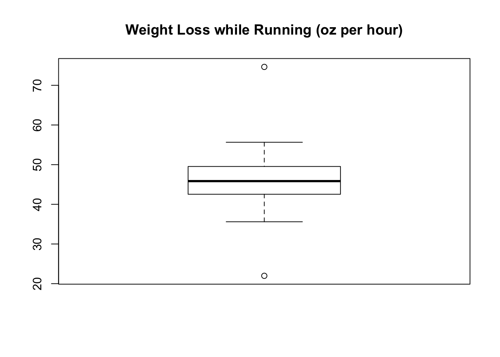

Update: 8/25/2018
I’ve been having a hard time with my long runs now that the weather is getting hot. I went on one in particular that was particularly tough. I was nauseous and felt hot afterwards for a long time. I probably had heat exhaustion. The next morning when I weighed myself I was about 5 lbs less than I thought I should be. This got me thinking that maybe I was also very dehydrated, even though I had taken water breaks at several water stops along the way.
I decided to keep track of how much weight I was losing on each run. I weighed myself in the buff before and after each run. After a few runs, I decided to look at the data.
library(googlesheets)
suppressPackageStartupMessages(library(dplyr))
library(ggplot2)# Change cache flag to F if updating data
my_sheets <- gs_ls()
fb <- gs_title("sweat_loss_data")## Sheet successfully identified: "sweat_loss_data"x <- gs_read(fb)## Accessing worksheet titled 'Form Responses 1'.## Parsed with column specification:
## cols(
## Timestamp = col_character(),
## Date = col_character(),
## Time_of_day = col_character(),
## Beginning_weight_lbs = col_double(),
## Ending_weight_lbs = col_double(),
## Duration_min = col_double(),
## Distance_miles = col_double(),
## Tradewinds = col_logical(),
## Sunny = col_logical(),
## Fluid_intake_oz = col_double()
## )The variables I had tracked included weight before and after, run duration, distance, presence of tradewinds, sun conditions, and fluid intake.
glimpse(x)## Observations: 16
## Variables: 10
## $ Timestamp <chr> "6/11/2018 19:07:51", "6/14/2018 7:00:56"...
## $ Date <chr> "6/11/2018", "6/14/2018", "6/16/2018", "6...
## $ Time_of_day <chr> "Shortly after sunrise", "Shortly after s...
## $ Beginning_weight_lbs <dbl> 174.4, 174.2, 171.6, 175.8, 175.2, 174.0,...
## $ Ending_weight_lbs <dbl> 172.2, 172.0, 169.8, 172.2, 173.0, 172.2,...
## $ Duration_min <dbl> 47.3, 60.6, 132.5, 46.3, 65.9, 63.5, 63.9...
## $ Distance_miles <dbl> 5.05, 6.48, 13.12, 4.65, 7.01, 7.01, 7.01...
## $ Tradewinds <lgl> TRUE, TRUE, FALSE, TRUE, TRUE, TRUE, TRUE...
## $ Sunny <lgl> FALSE, NA, TRUE, TRUE, NA, NA, NA, FALSE,...
## $ Fluid_intake_oz <dbl> 0.0, 21.0, 70.0, 0.0, 20.0, 20.0, 20.0, 1...I took data from 16 runs. Most of these were early morning, right after sunrise. After accounting for the fluid intake, I found that I was losing about 1.3 kg per hour, or about 45 oz per hour. Some of this weight loss was from the energy required to propel my butt down the road, but most of it was probably water.
x %>% mutate(dwt_lbs = Beginning_weight_lbs - Ending_weight_lbs + Fluid_intake_oz/16) %>%
mutate(dwt_g = 1000 * dwt_lbs / 2.2) %>%
mutate(dwt_g_hr = dwt_g / Duration_min * 60,
dwt_oz_hr = dwt_lbs * 16 / Duration_min * 60) %>%
select(dwt_g_hr, dwt_oz_hr)## # A tibble: 16 x 2
## dwt_g_hr dwt_oz_hr
## <dbl> <dbl>
## 1 1268. 44.7
## 2 1581. 55.6
## 3 1271. 44.7
## 4 2121. 74.6
## 5 1428. 50.3
## 6 1310. 46.1
## 7 1387. 48.8
## 8 1303. 45.9
## 9 1148. 40.4
## 10 624. 22.0
## 11 1011. 35.6
## 12 1158. 40.8
## 13 1270. 44.7
## 14 1414. 49.8
## 15 1056. 37.2
## 16 1194. 42.0x %>% mutate(dwt_lbs = Beginning_weight_lbs - Ending_weight_lbs + Fluid_intake_oz/16) %>%
mutate(dwt_g = 1000 * dwt_lbs / 2.2) %>%
mutate(dwt_g_hr = dwt_g / Duration_min * 60,
dwt_oz_hr = dwt_lbs * 16 / Duration_min * 60) %>%
summarize(mean(dwt_g_hr), sd(dwt_g_hr), mean(dwt_oz_hr), sd(dwt_oz_hr))## # A tibble: 1 x 4
## `mean(dwt_g_hr)` `sd(dwt_g_hr)` `mean(dwt_oz_hr)` `sd(dwt_oz_hr)`
## <dbl> <dbl> <dbl> <dbl>
## 1 1284. 310. 45.2 10.9Here’s the distribution of the data. Nice boxplot!
chart_data <- x %>% mutate(dwt_lbs = Beginning_weight_lbs - Ending_weight_lbs + Fluid_intake_oz/16) %>%
mutate(dwt_g = 1000 * dwt_lbs / 2.2) %>%
mutate(dwt_g_hr = dwt_g / Duration_min * 60,
dwt_oz_hr = dwt_lbs * 16 / Duration_min * 60)
boxplot(chart_data$dwt_oz_hr, main = "Weight Loss while Running (oz per hour)")
My take home lesson was that I needed to hydrate more aggressively. Now I carry 20 oz of water or Gatorade with me using a belt and flasks, and I refill every 2-3 miles. With this rate I can pretty much get to zero weight change over the course of a long run and the result has been much easier long runs!